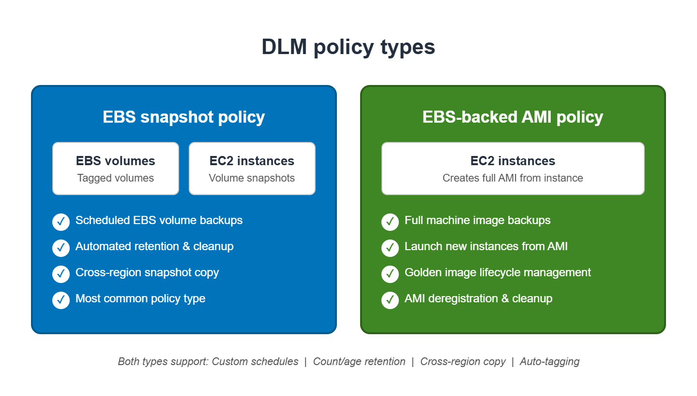
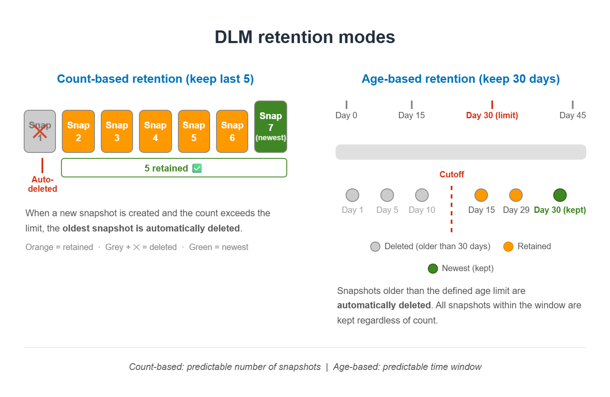

Policy Types
DLM supports two main policy types: EBS snapshot policies and EBS-backed AMI policies.
In today's session, we saw the console shows a dropdown with "EBS snapshot policy" selected by default when creating a new lifecycle policy. This is the most common type.

Figure 3: DLM policy types — EBS snapshots vs EBS-backed AMI policies
Custom Policy vs Default Policy
When creating a lifecycle policy, AWS gives you two options:
- Default Policy: AWS pre-configures sensible defaults — great for a quick setup with no customization needed.
- Custom Policy: You define every parameter — target resources, schedule, retention count, copy rules, and tags. This is what we saw selected in today's session.
A default policy automatically backs up all EBS volumes or instances that do not have recent backups. It is the fastest way to get started with zero configuration.
Target Resources
DLM uses resource tags to identify which volumes or instances to snapshot. You target resources using tag-based selection — DLM will snapshot any EBS volume or instance that matches the tags you specify in the policy.
Example: You might tag all production volumes with Backup=true and configure DLM to target volumes with that tag. When you add a new production volume and tag it the same way, DLM automatically picks it up — no policy update needed.
Schedules
DLM policies support scheduling snapshots at a fixed frequency (hourly, daily, weekly, monthly, yearly) or using a custom cron expression.
The frequency you choose should match how much data loss is acceptable. If your database changes every hour, you might want hourly snapshots. For a static website, daily is more than enough.
📚 According to AWS documentation, the minimum snapshot frequency supported by DLM is 1 hour. You cannot schedule snapshots more frequently than once per hour using DLM.
📚 Source: AWS DLM Documentation
Retention Rules
Retention defines how many snapshots to keep (or for how long). DLM supports two retention modes: count-based (keep the last N snapshots) and age-based (delete snapshots older than N days/weeks/months).
Once the retention limit is reached, DLM automatically deletes the oldest snapshots. This keeps your storage bill predictable and your S3 snapshot storage clean.

Figure 4: DLM retention modes — count-based vs age-based retention
Cross-Region Copy
DLM can automatically copy snapshots to a different AWS region after creation, enabling disaster recovery across geographic boundaries.
This is valuable for compliance requirements or when your DR (Disaster Recovery) region is different from your primary region. For example, if your application runs in ap-south-1 (Mumbai), you might configure DLM to copy snapshots to us-east-1 (N. Virginia) for geographic redundancy.
Snapshot Tagging
DLM can automatically apply tags to every snapshot it creates. This is powerful for cost allocation, as you can see exactly how much you spend on backups per environment, project, or team by filtering the Cost Explorer by snapshot tags.